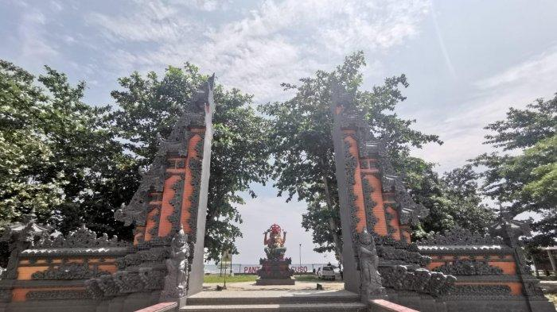

Detail Wisata Pantai ujung suso
Pantai ujung suso
Di pantai ini, anda akan melihat patung Dewa Ganesha yang cukup besar dan tinggi. Patung Dewa Ganesha dan gapura khas Bali ini juga yang menjadi daya tarik Pantai Ujung Suso, spot keren untuk wisatawan yang ingin berfoto, Pantai ini merupakan tempat wisata populer yang setiap harinya ramai dikunjungi wisatawan apalagi di akhir pekan. Selain pengunjung lokal, pantai ini juga cukup diminati wisatawan dari luar daerah.
Fasilitas Pantai ujung suso

Pantai Ujung Suso sendiri telah dilengkapi dengan sejumlah fasilitas bagi para pengunjungnya. Lookouts, toilet dan kamar mandi tersedia di pantai ini. Selain itu, sudah disiapkan juga spot foto berupa dua ayunan yang berdiri di pinggir pantai.
Tempat Pantai Ujung suso

pantai itu bernama Pantai Ujung Suso, di Desa Mabonta, Kecamatan Burau, Luwu Timur. Seperti di banyak tempat di Bali, di pantai ini juga ada patung Dewa Ganesha yang cukup besar dan tinggi. Pantai ini sangat direkomendasikan untuk mengahabiskan waktu bersama keluarga ataupun teman.
Harga: Tidak di Pungut Biaya